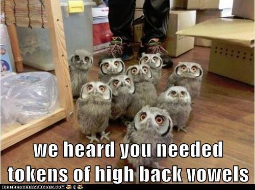
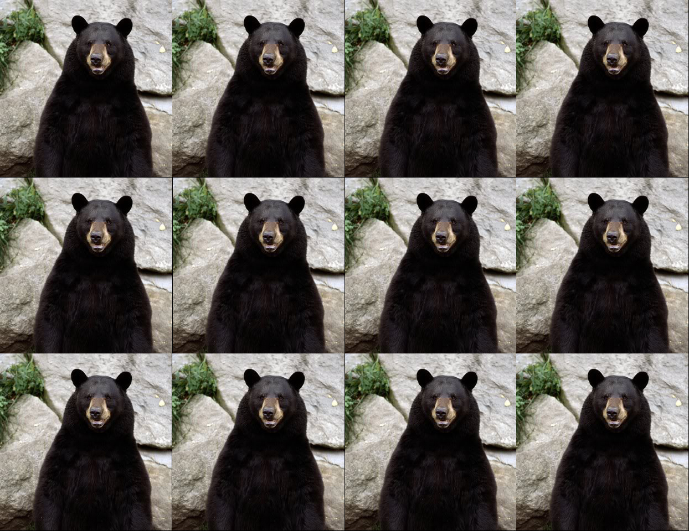
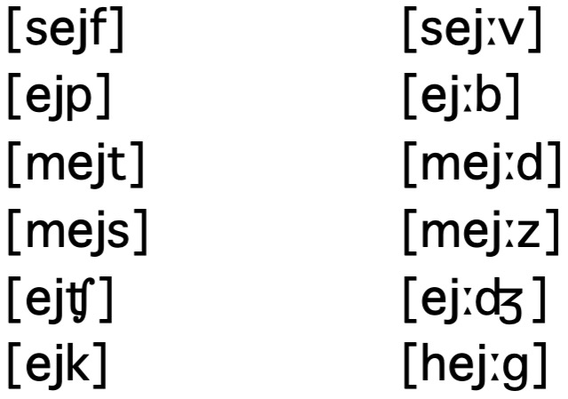

Phonemic Analysis from three different perspectives
How to tell if your instructor is actually Batman
How to actually DO phonemic analysis
What are the morphemes in this language?
What are the words in this language?
How should this language be written?
Decisions will need to be made
Which sounds carry a contrast
Which sounds define words
Which sounds cannot be changed without changing meanings
Determining which sound changes affect the meaning of a word in a language
… which sound changes are predictable, and don’t change word meanings
… and which sound variations are completely unpredictable and meaningless
Phonemes go in // slashes
/t/ means ‘the /t/ phoneme’
/t/ exists in the speaker’s mind*
Allophones go in [] brackets
[t] means ‘a [t] on the surface’, from the speaker’s mouth
This [t] may be an allophone of /t/ or some other phoneme
That’s why I’m covering it from three directions
If you’re struggling here, come to office hours
“People use a huge set of sounds, and I don’t know which differences matter!”
“What changes in sounds are random, and don’t affect the meanings?”
“What changes in sounds are meaningful, and change the meaning of a word?”
“What changes in sounds can be predicted based on the other elements of the word, and don’t change the meaning?”
“What should I write down in my grammar or dictionary?”
| [t̪im] | [tim] |
| [t̪iz] | [tiz] |
| [t̪aj] | [taj] |
| [t̪ap] | [tap] |
In English, it doesn’t matter whether a /t/ is made as a dental sound [t̪] or an alveolar sound [t]
Speakers can do two things and nobody particularly cares
There’s no pattern, no standard, just maddening chaos
This is free variation.
| [ki] | [pi] |
|---|---|
| [kat] | [pat] |
| [kæst] | [pæst] |
| [kap] | [pap] |
| [kul] | [pul] |
When you change from /k/ to /p/, the meaning of the word changes
We see ‘minimal pairs’ (e.g. [ki] and [pi]) where that segment is the only thing that’s changed.
/k/ and /p/ are in a contrastive distribution
They are two different phonemes
| [sejf] | [sej:v] |
| [ejp] | [ej:b] |
| [mejt] | [mej:d] |
| [ejtʃ] | [ej:dʒ] |
| [ejk] | [ej:g] |
| [mejs] | [mej:z] |
Changing from a short to long [ej] doesn’t change the meaning for speakers
Vowel length is predictable based on the voicing of the next consonant
Short and long vowels are in a complementary distribution
They are allophones of the same phoneme
When somebody says either
When somebody says either
Light l ([l] as in ‘lip’)
‘Dark’ or Velarized l ([ɫ] as in ‘pill’)
The ‘Dark’ L happens at the end of a syllable
When somebody says either…
When somebody says either…
When somebody says…
… and that trading is opaque to speakers
The /l/ phoneme has two allophones in English: [l] and [ɫ]
The /t/ phoneme has many allophones in English: [t], [tʰ], [ʔ], [t˺], [ɾ], [ɾ̃]
Every sound produced is an allophone of some phoneme
They always show up in specific environments, and don’t affect the meaning of the word
[ɱ] shows up in English only when there’s an /m/ before an /f/
[n̪] shows up in English only when there’s an /n/ before an Interdental sound
[ɫ] shows up in MUSE only at the end of a syllable
‘lip’ [lɪp] but ‘pill’ [pɪɫ]
There is no pattern which dictates where they show up
They can occur in the same environments
They form ‘minimal pairs’, different words which differ only in that sound
Finding two people talking to each other in the same place is a good indication that they’re independent entities
Two different personas can’t be in the same place at the same time!
They’re in contrastive distribution
If two sounds show up in an identical context, they’re independent phonemes
This is a potential sign that Will could be the same being as Batman
If Will runs into the bathroom when crime happens and Batman emerges, that’s pretty good evidence
They’re in complementary distribution
If two sounds only show up in different contexts, or a sound suddenly changes, they’re probably allophones of one phoneme
(Batman and his alter-ego, Bruce Wayne)
(Batman and Superman, two different heroes)
Superman is an Allophone of Clark Kent
Batman is an Allophone of Bruce Wayne
Batman, Superman, and Will Styler are Phonemes
You can look at the data and see when the meaning changes
You can look at perception, and see what changes listeners “hear”
You can look at the distribution, and see what sounds occur when.
If you have a minimal pair where the meaning changes, the sounds are different phonemes and your work is done. Always.

0: Check for Minimal Pairs, if none…
1: Collect all the environments the sound you’re interested in can occur in
2: State the distribution of the sounds.
3: Decide which allophone is the basic underlying form
4: Write rules to derive the other allophone(s) from it based on environment
Write down what follows and precedes them
Use __ to help focus your brain on the context
“This one occurs before/after/around/near __”
Sometimes you can only describe where one happens
Test hypotheses!
Choose the one you can’t predict
Often it’s the “everywhere else” allophone
Adjacent sound or sounds
Adjacent types of sound
Word boundaries
Syllable boundaries
Sounds or later earlier in the word
| [l] | Gloss | [n] | Gloss |
|---|---|---|---|
| [lʲet] | ‘year’ | [sin] | ‘son’ |
| [lʲublʲu] | ‘I love’ | [nʲet] | ‘no’ |
| [slon] | ‘elephant’ | [maʃina] | ‘car’ |
| [dʲelal] | ‘did’ | [novʲi] | ‘new’ |
| [bʲeli] | ‘white’ | [rajon] | ‘district’ |


Phonemic analysis is how we determine which sounds have an identity in the language
Will may be Batman
Check for minimal pairs first, damnit.
We’ll jump out of a plane!